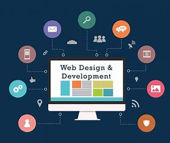
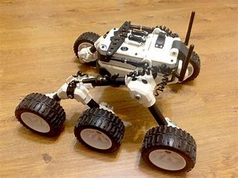
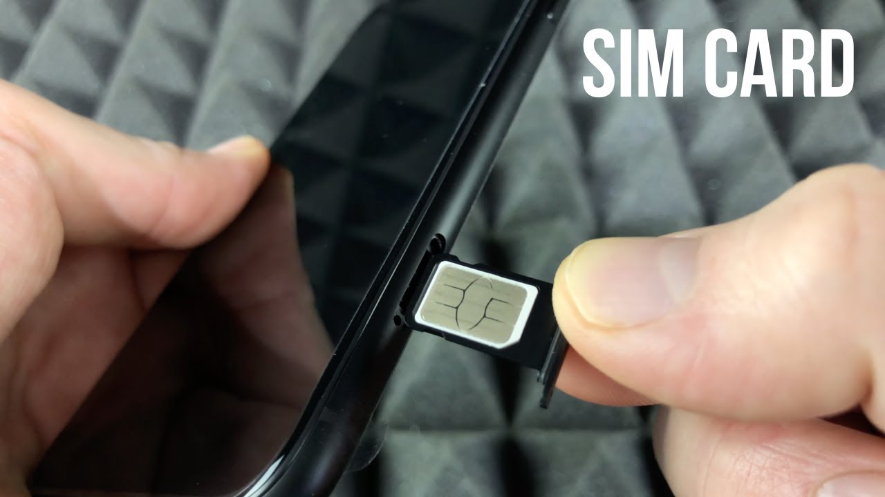

About Me
Computer Engineering graduate with hands-on experience in embedded design, test automation, and software development. Delivered a 50% increase in testing efficiency through automation and built scalable tools enhancing field testing for global telecom solutions. Proficient in C++, Python, and DevOps technologies, seeking opportunities to drive innovation in embedded systems and software engineering.
Contact Information
Email: libenbw@gmail.com
Phone: +5713858875
Location: Anywhere, World
My Projects
Mobile Banking Application
Developed a user-friendly mobile banking application with a Qt-based GUI, enabling seamless user interaction. Implemented core functionalities and financial algorithms in C++, ensuring high performance and reliability. Focused on enhancing security and transactional efficiency, resulting in a robust and responsive application. Leveraged modular programming to ensure scalability and maintainability of the codebase. Extensively tested the application for smooth integration with existing banking systems. Delivered features such as account management, fund transfers, and transaction history. Addressed user feedback to enhance functionality and usability, contributing to increased user satisfaction. Documented the design and implementation to facilitate future upgrades.
Rover Navigation System
Engineered an autonomous rover navigation system that utilized SPI, UART, and I2C interfaces for real-time communication with sensors, motors, and encoders. Implemented PID control algorithms for precise motor control and path tracking. Designed the system to adapt to varying terrains and navigate effectively while avoiding obstacles. Developed firmware for sensor integration, ensuring accurate data collection for decision-making. Conducted simulations and field tests to optimize performance under diverse conditions. Integrated features for remote monitoring and control. Documented the design, algorithms, and implementation to assist in future enhancements and scalability. Contributed to advancements in autonomous robotic systems.
Web Development
Built responsive and dynamic web applications using React.js for the frontend and Node.js for the backend. Integrated Firebase for backend services, including real-time database management, authentication, and hosting. Focused on creating a seamless user experience with interactive and mobile-friendly interfaces. Followed best practices for coding, ensuring maintainable and scalable web solutions. Implemented features such as data visualization, user management, and notifications. Conducted usability testing to refine the UI and enhance user engagement. Delivered fully functional websites that met client requirements and adhered to project deadlines. Documented all processes to streamline future updates and maintenance.
Client/Server Programs
Designed and implemented client/server programs using the MQTT protocol for efficient communication in IoT systems. Utilized C for hardware-level integration, Python for scripting, and a microcontroller for real-time operations. Stored and managed data using MongoDB, ensuring scalable and fast access to information. Focused on ensuring secure, lightweight, and reliable message exchange between devices. Designed the server-side logic to handle concurrent client connections efficiently. Tested the system in real-time environments to validate performance and robustness. Successfully integrated it into an IoT ecosystem, enabling seamless device communication and control. Documented technical details for further customization and scaling.
eSIM Management Tool
Developed a sophisticated eSIM management tool using C# and other eSIM technologies, tailored for customizing and managing ESIT file systems within an eUICC (Embedded Universal Integrated Circuit Card). Designed the tool to streamline operations such as file system customization, profile management, and secure provisioning. Enabled the tool to send commands to the eUICC, facilitating seamless communication and task execution. Focused on compliance with GSMA standards to ensure compatibility across multiple platforms. Integrated debugging and logging features to enhance reliability. Delivered a user-friendly interface for technical teams, significantly reducing operational complexity. Documented functionalities for scalability and future upgrades.